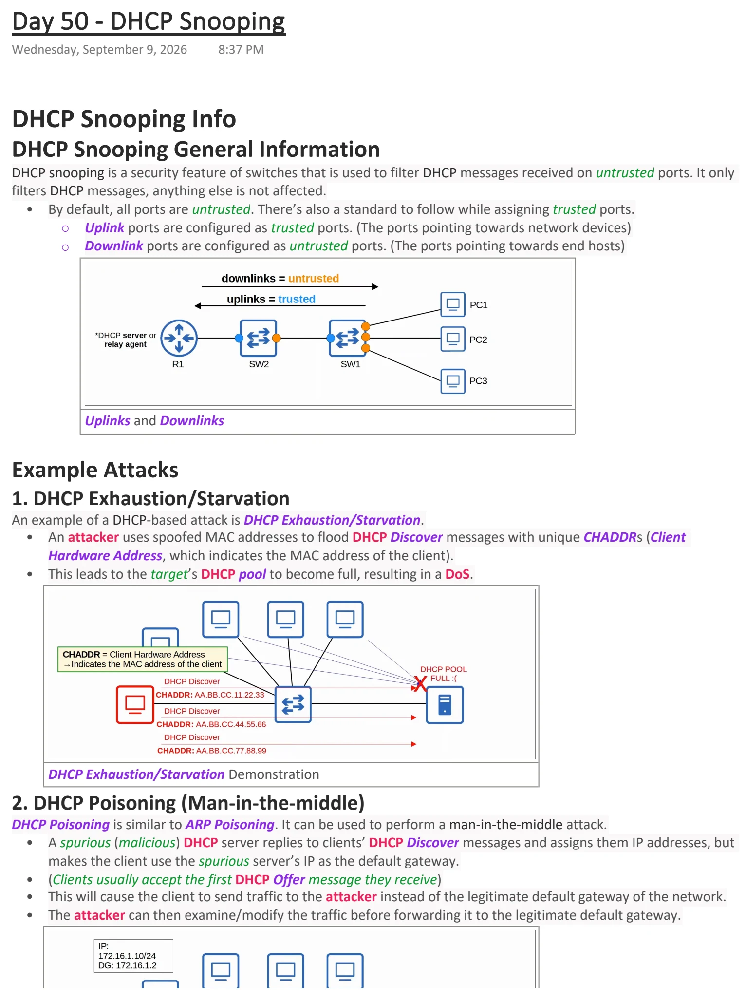
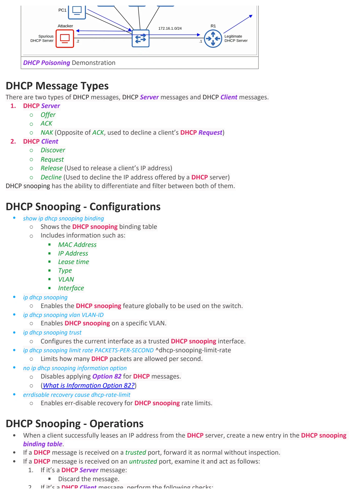
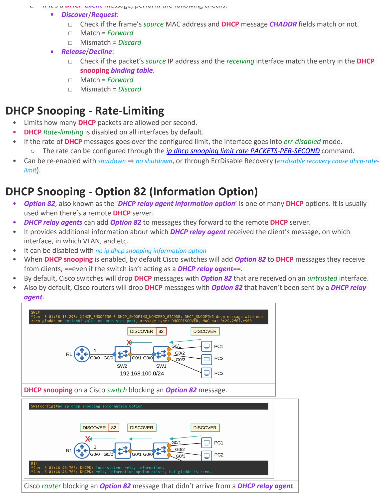

DHCP Snooping
Download original PDF


Text view — DHCP Snooping
Extracted from the original export. Diagrams and some formatting appear in the notes above.
Day 50 - DHCP Snooping Wednesday, September 9, 2026 8:37 PM DHCP Snooping Info DHCP Snooping General Information DHCP snooping is a security feature of switches that is used to filter DHCP messages received on untrusted ports. It only filters DHCP messages, anything else is not affected. • By default, all ports are untrusted. There’s also a standard to follow while assigning trusted ports. ○ Uplink ports are configured as trusted ports. (The ports pointing towards network devices) ○ Downlink ports are configured as untrusted ports. (The ports pointing towards end hosts) Uplinks and Downlinks Example Attacks 1. DHCP Exhaustion/Starvation An example of a DHCP-based attack is DHCP Exhaustion/Starvation. • An attacker uses spoofed MAC addresses to flood DHCP Discover messages with unique CHADDRs (Client Hardware Address, which indicates the MAC address of the client). • This leads to the target’s DHCP pool to become full, resulting in a DoS. DHCP Exhaustion/Starvation Demonstration 2. DHCP Poisoning (Man-in-the-middle) DHCP Poisoning is similar to ARP Poisoning. It can be used to perform a man-in-the-middle attack. • A spurious (malicious) DHCP server replies to clients’ DHCP Discover messages and assigns them IP addresses, but makes the client use the spurious server’s IP as the default gateway. • (Clients usually accept the first DHCP Offer message they receive) • This will cause the client to send traffic to the attacker instead of the legitimate default gateway of the network. • The attacker can then examine/modify the traffic before forwarding it to the legitimate default gateway. DHCP Poisoning Demonstration DHCP Message Types There are two types of DHCP messages, DHCP Server messages and DHCP Client messages. 1. DHCP Server ○ Offer ○ ACK ○ NAK (Opposite of ACK, used to decline a client’s DHCP Request) 2. DHCP Client ○ Discover ○ Request ○ Release (Used to release a client’s IP address) ○ Decline (Used to decline the IP address offered by a DHCP server) DHCP snooping has the ability to differentiate and filter between both of them. DHCP Snooping - Configurations • show ip dhcp snooping binding ○ Shows the DHCP snooping binding table ○ Includes information such as: § MAC Address § IP Address § Lease time § Type § VLAN § Interface • ip dhcp snooping ○ Enables the DHCP snooping feature globally to be used on the switch. • ip dhcp snooping vlan VLAN-ID ○ Enables DHCP snooping on a specific VLAN. • ip dhcp snooping trust ○ Configures the current interface as a trusted DHCP snooping interface. • ip dhcp snooping limit rate PACKETS-PER-SECOND ^dhcp-snooping-limit-rate ○ Limits how many DHCP packets are allowed per second. • no ip dhcp snooping information option ○ Disables applying Option 82 for DHCP messages. ○ (What is Information Option 82?) • errdisable recovery cause dhcp-rate-limit ○ Enables err-disable recovery for DHCP snooping rate limits. DHCP Snooping - Operations • When a client successfully leases an IP address from the DHCP server, create a new entry in the DHCP snooping binding table. • If a DHCP message is received on a trusted port, forward it as normal without inspection. • If a DHCP message is received on an untrusted port, examine it and act as follows: 1. If it’s a DHCP Server message: § Discard the message. 2. If it’s a DHCP Client message, perform the following checks: § Discover/Request: □ Check if the frame’s source MAC address and DHCP message CHADDR fields match or not. □ Match = Forward □ Mismatch = Discard § Release/Decline: □ Check if the packet’s source IP address and the receiving interface match the entry in the DHCP snooping binding table. □ Match = Forward □ Mismatch = Discard DHCP Snooping - Rate-Limiting • Limits how many DHCP packets are allowed per second. • DHCP Rate-limiting is disabled on all interfaces by default. • If the rate of DHCP messages goes over the configured limit, the interface goes into err-disabled mode. ○ The rate can be configured through the ip dhcp snooping limit rate PACKETS-PER-SECOND command. • Can be re-enabled with shutdown ⇒ no shutdown, or through ErrDisable Recovery (errdisable recovery cause dhcp-rate- limit). DHCP Snooping - Option 82 (Information Option) • Option 82, also known as the ‘DHCP relay agent information option’ is one of many DHCP options. It is usually used when there’s a remote DHCP server. • DHCP relay agents can add Option 82 to messages they forward to the remote DHCP server. • It provides additional information about which DHCP relay agent received the client’s message, on which interface, in which VLAN, and etc. • It can be disabled with no ip dhcp snooping information option • When DHCP snooping is enabled, by default Cisco switches will add Option 82 to DHCP messages they receive from clients, ==even if the switch isn’t acting as a DHCP relay agent==. • By default, Cisco switches will drop DHCP messages with Option 82 that are received on an untrusted interface. • Also by default, Cisco routers will drop DHCP messages with Option 82 that haven’t been sent by a DHCP relay agent. DHCP snooping on a Cisco switch blocking an Option 82 message. Cisco router blocking an Option 82 message that didn’t arrive from a DHCP relay agent. Day 50 - DHCP Snooping Wednesday, September 9, 2026 8:37 PM DHCP Snooping Info DHCP Snooping General Information DHCP snooping is a security feature of switches that is used to filter DHCP messages received on untrusted ports. It only filters DHCP messages, anything else is not affected. • By default, all ports are untrusted. There’s also a standard to follow while assigning trusted ports. ○ Uplink ports are configured as trusted ports. (The ports pointing towards network devices) ○ Downlink ports are configured as untrusted ports. (The ports pointing towards end hosts) Uplinks and Downlinks Example Attacks 1. DHCP Exhaustion/Starvation An example of a DHCP-based attack is DHCP Exhaustion/Starvation. • An attacker uses spoofed MAC addresses to flood DHCP Discover messages with unique CHADDRs (Client Hardware Address, which indicates the MAC address of the client). • This leads to the target’s DHCP pool to become full, resulting in a DoS. DHCP Exhaustion/Starvation Demonstration 2. DHCP Poisoning (Man-in-the-middle) DHCP Poisoning is similar to ARP Poisoning. It can be used to perform a man-in-the-middle attack. • A spurious (malicious) DHCP server replies to clients’ DHCP Discover messages and assigns them IP addresses, but makes the client use the spurious server’s IP as the default gateway. • (Clients usually accept the first DHCP Offer message they receive) • This will cause the client to send traffic to the attacker instead of the legitimate default gateway of the network. • The attacker can then examine/modify the traffic before forwarding it to the legitimate default gateway. DHCP Poisoning Demonstration DHCP Message Types There are two types of DHCP messages, DHCP Server messages and DHCP Client messages. 1. DHCP Server ○ Offer ○ ACK ○ NAK (Opposite of ACK, used to decline a client’s DHCP Request) 2. DHCP Client ○ Discover ○ Request ○ Release (Used to release a client’s IP address) ○ Decline (Used to decline the IP address offered by a DHCP server) DHCP snooping has the ability to differentiate and filter between both of them. DHCP Snooping - Configurations • show ip dhcp snooping binding ○ Shows the DHCP snooping binding table ○ Includes information such as: § MAC Address § IP Address § Lease time § Type § VLAN § Interface • ip dhcp snooping ○ Enables the DHCP snooping feature globally to be used on the switch. • ip dhcp snooping vlan VLAN-ID ○ Enables DHCP snooping on a specific VLAN. • ip dhcp snooping trust ○ Configures the current interface as a trusted DHCP snooping interface. • ip dhcp snooping limit rate PACKETS-PER-SECOND ^dhcp-snooping-limit-rate ○ Limits how many DHCP packets are allowed per second. • no ip dhcp snooping information option ○ Disables applying Option 82 for DHCP messages. ○ (What is Information Option 82?) • errdisable recovery cause dhcp-rate-limit ○ Enables err-disable recovery for DHCP snooping rate limits. DHCP Snooping - Operations • When a client successfully leases an IP address from the DHCP server, create a new entry in the DHCP snooping binding table. • If a DHCP message is received on a trusted port, forward it as normal without inspection. • If a DHCP message is received on an untrusted port, examine it and act as follows: 1. If it’s a DHCP Server message: § Discard the message. 2. If it’s a DHCP Client message, perform the following checks: § Discover/Request: □ Check if the frame’s source MAC address and DHCP message CHADDR fields match or not. □ Match = Forward □ Mismatch = Discard § Release/Decline: □ Check if the packet’s source IP address and the receiving interface match the entry in the DHCP snooping binding table. □ Match = Forward □ Mismatch = Discard DHCP Snooping - Rate-Limiting • Limits how many DHCP packets are allowed per second. • DHCP Rate-limiting is disabled on all interfaces by default. • If the rate of DHCP messages goes over the configured limit, the interface goes into err-disabled mode. ○ The rate can be configured through the ip dhcp snooping limit rate PACKETS-PER-SECOND command. • Can be re-enabled with shutdown ⇒ no shutdown, or through ErrDisable Recovery (errdisable recovery cause dhcp-rate- limit). DHCP Snooping - Option 82 (Information Option) • Option 82, also known as the ‘DHCP relay agent information option’ is one of many DHCP options. It is usually used when there’s a remote DHCP server. • DHCP relay agents can add Option 82 to messages they forward to the remote DHCP server. • It provides additional information about which DHCP relay agent received the client’s message, on which interface, in which VLAN, and etc. • It can be disabled with no ip dhcp snooping information option • When DHCP snooping is enabled, by default Cisco switches will add Option 82 to DHCP messages they receive from clients, ==even if the switch isn’t acting as a DHCP relay agent==. • By default, Cisco switches will drop DHCP messages with Option 82 that are received on an untrusted interface. • Also by default, Cisco routers will drop DHCP messages with Option 82 that haven’t been sent by a DHCP relay agent. DHCP snooping on a Cisco switch blocking an Option 82 message. Cisco router blocking an Option 82 message that didn’t arrive from a DHCP relay agent. Day 50 - DHCP Snooping Wednesday, September 9, 2026 8:37 PM DHCP Snooping Info DHCP Snooping General Information DHCP snooping is a security feature of switches that is used to filter DHCP messages received on untrusted ports. It only filters DHCP messages, anything else is not affected. • By default, all ports are untrusted. There’s also a standard to follow while assigning trusted ports. ○ Uplink ports are configured as trusted ports. (The ports pointing towards network devices) ○ Downlink ports are configured as untrusted ports. (The ports pointing towards end hosts) Uplinks and Downlinks Example Attacks 1. DHCP Exhaustion/Starvation An example of a DHCP-based attack is DHCP Exhaustion/Starvation. • An attacker uses spoofed MAC addresses to flood DHCP Discover messages with unique CHADDRs (Client Hardware Address, which indicates the MAC address of the client). • This leads to the target’s DHCP pool to become full, resulting in a DoS. DHCP Exhaustion/Starvation Demonstration 2. DHCP Poisoning (Man-in-the-middle) DHCP Poisoning is similar to ARP Poisoning. It can be used to perform a man-in-the-middle attack. • A spurious (malicious) DHCP server replies to clients’ DHCP Discover messages and assigns them IP addresses, but makes the client use the spurious server’s IP as the default gateway. • (Clients usually accept the first DHCP Offer message they receive) • This will cause the client to send traffic to the attacker instead of the legitimate default gateway of the network. • The attacker can then examine/modify the traffic before forwarding it to the legitimate default gateway. DHCP Poisoning Demonstration DHCP Message Types There are two types of DHCP messages, DHCP Server messages and DHCP Client messages. 1. DHCP Server ○ Offer ○ ACK ○ NAK (Opposite of ACK, used to decline a client’s DHCP Request) 2. DHCP Client ○ Discover ○ Request ○ Release (Used to release a client’s IP address) ○ Decline (Used to decline the IP address offered by a DHCP server) DHCP snooping has the ability to differentiate and filter between both of them. DHCP Snooping - Configurations • show ip dhcp snooping binding ○ Shows the DHCP snooping binding table ○ Includes information such as: § MAC Address § IP Address § Lease time § Type § VLAN § Interface • ip dhcp snooping ○ Enables the DHCP snooping feature globally to be used on the switch. • ip dhcp snooping vlan VLAN-ID ○ Enables DHCP snooping on a specific VLAN. • ip dhcp snooping trust ○ Configures the current interface as a trusted DHCP snooping interface. • ip dhcp snooping limit rate PACKETS-PER-SECOND ^dhcp-snooping-limit-rate ○ Limits how many DHCP packets are allowed per second. • no ip dhcp snooping information option ○ Disables applying Option 82 for DHCP messages. ○ (What is Information Option 82?) • errdisable recovery cause dhcp-rate-limit ○ Enables err-disable recovery for DHCP snooping rate limits. DHCP Snooping - Operations • When a client successfully leases an IP address from the DHCP server, create a new entry in the DHCP snooping binding table. • If a DHCP message is received on a trusted port, forward it as normal without inspection. • If a DHCP message is received on an untrusted port, examine it and act as follows: 1. If it’s a DHCP Server message: § Discard the message. 2. If it’s a DHCP Client message, perform the following checks: § Discover/Request: □ Check if the frame’s source MAC address and DHCP message CHADDR fields match or not. □ Match = Forward □ Mismatch = Discard § Release/Decline: □ Check if the packet’s source IP address and the receiving interface match the entry in the DHCP snooping binding table. □ Match = Forward □ Mismatch = Discard DHCP Snooping - Rate-Limiting • Limits how many DHCP packets are allowed per second. • DHCP Rate-limiting is disabled on all interfaces by default. • If the rate of DHCP messages goes over the configured limit, the interface goes into err-disabled mode. ○ The rate can be configured through the ip dhcp snooping limit rate PACKETS-PER-SECOND command. • Can be re-enabled with shutdown ⇒ no shutdown, or through ErrDisable Recovery (errdisable recovery cause dhcp-rate- limit). DHCP Snooping - Option 82 (Information Option) • Option 82, also known as the ‘DHCP relay agent information option’ is one of many DHCP options. It is usually used when there’s a remote DHCP server. • DHCP relay agents can add Option 82 to messages they forward to the remote DHCP server. • It provides additional information about which DHCP relay agent received the client’s message, on which interface, in which VLAN, and etc. • It can be disabled with no ip dhcp snooping information option • When DHCP snooping is enabled, by default Cisco switches will add Option 82 to DHCP messages they receive from clients, ==even if the switch isn’t acting as a DHCP relay agent==. • By default, Cisco switches will drop DHCP messages with Option 82 that are received on an untrusted interface. • Also by default, Cisco routers will drop DHCP messages with Option 82 that haven’t been sent by a DHCP relay agent. DHCP snooping on a Cisco switch blocking an Option 82 message. Cisco router blocking an Option 82 message that didn’t arrive from a DHCP relay agent.